Time series decomposition and exponential smoothing
DSC4812: Forecasting
Author
Tinozivashe N. Sibanda (10501541)
Quarterly Australian Cement Production
The aus_production data from the tsibbledata package contains quarterly estimates of selected indicators of manufacturing production in Australia. We focus on the Cement variable, which records the production of Portland cement in thousands of tonnes and convert this to megatonnes (millions of tonnes) for interpretability.
Code
# Cement production time series in millions of tonnescement_production <- aus_production |>select(Quarter, Cement) |># Cement in kilotonnes (thousands)mutate(Cement = Cement /1000) # Convert to megatonnes (millions)# plotcement_production |>autoplot(Cement) +labs(title ="Cement Production in Australia",subtitle ="Volume of portland cement in megatonnes",y ="Volume",caption ="Source: Australian Bureau of Statistics (via tsibbledata::aus_production)" ) +geom_line(color ="steelblue", linewidth =1)
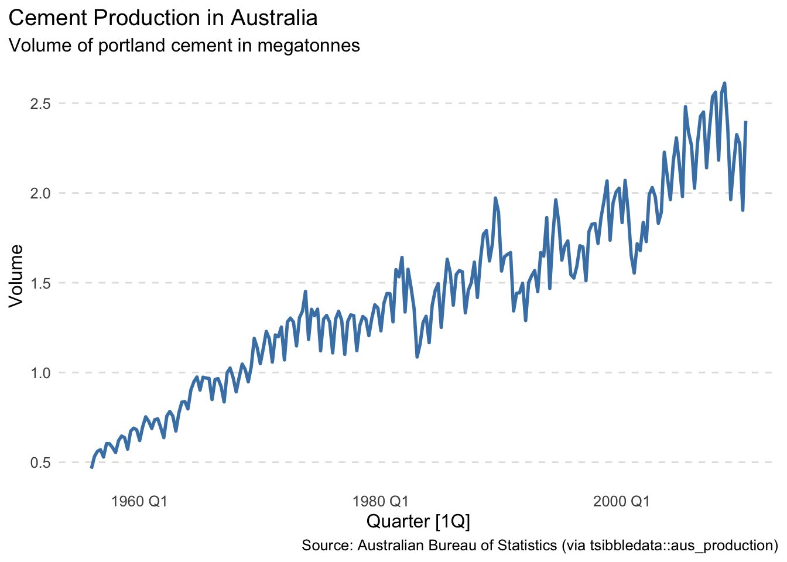
Figure 1: Quarterly estimates of portland cement production in millions of tonnes.
Australian cement production volumes show an increasing trend with seasonal cycles.
The variance in the seasonal cycles increase with the level of the series.
Moreover, the seasonal pattern seems to change post-1980 characterized by large drops in cement production after a few years.
Guerrero’s method for Box-Cox lambda selection
The guerrero feature from the fabletools package can be used to choose a value of lambda which can assist in selecting a variance-stabilizing transformation (Guerrero, 1993). We apply the Guerrero’s method below:
Code
# Estimate optimal Box-Cox lambda using Guerrero's methodcement_lambda <- cement_production |>features(Cement, features = guerrero) |>pull(lambda_guerrero)cement_lambda
[1] -0.309022
Interpretation:
The parameter estimated using Guerrero’s method is \(\lambda \approx\) -0.309.
This indicates that a transformation between an inverse square root \(\left(\frac{1}{\sqrt{y}}\right)\) and an inverse cube root \(\left(\frac{1}{\sqrt[3]{y}}\right)\) is optimal to stabilise the variance in the seasonal cycles.
Applying a Box-Cox Transformation
Box-Cox transformations are a useful family of transformations, that includes both logarithmic and power transformations. Figure 2 shows the tranformed cement production volumes using a Box-Cox with \(\lambda \approx\) -0.309. It shows that the variance of the series is stable as the level of the series increases. Moreover, we can still can see the large drops that characterize the change in the seasonal pattern post-1982.
Code
# plotcement_production |>autoplot(box_cox(Cement, cement_lambda)) +labs(title ="Cement Production in Australia",subtitle =TeX(paste0("Variance stabilisation via Box-Cox: $\\lambda \\approx ", round(cement_lambda, 3), "$" )),y ="Box-Cox (Volume)" ) +geom_line(color ="steelblue", linewidth =1)
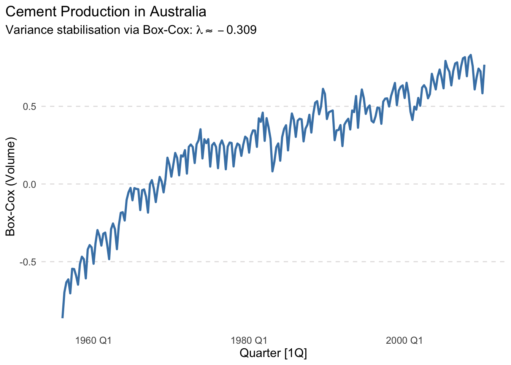
Figure 2: Quarterly estimates of portland cement production transformed via Box-Cox
Decomposition using STL and X-11
Timeseries decomposition methods break down a series into its constituent components specifically, its trend-cycle, seasonal, and remainder components. Figure 3 and Figure 4 show the decomposition of the transformed cement production volumes into the three components.
Figure 4: X-11 decomposition of the Box-Cox Transformed Cement Production Volume
Comparison: STL and X-11 Decomposition
Trend Component: The trend estimated by Figure 3 (STL) is smoother and more flexible compared to that in Figure 4 (X-11), which may reflect the underlying design of STL to better capture gradual, nonlinear trend changes.
Seasonal Component: Both methods allow for time-varying seasonality, although STL achieves this through local smoothing, while X-11 uses moving averages and filters rooted in seasonal adjustment procedures from official statistics. In this case, both methods yield similar seasonal patterns.
Remainder Component: The remainder (or residual) series in both decompositions appear to be mean-zero and roughly homoscedastic, suggesting good model fit. However, the remainder from Figure 4 displays lower variance, implying X-11 may have captured more structure in the data, leaving behind a more stable residual. In contrast, Figure 3 shows slightly larger fluctuations in the remainder, which might indicate some noise or local patterns not fully explained.
Overall, STL provides more robustness to outliers and flexibility in modeling local trends, making it well-suited for exploratory decomposition. X-11, while more rigid, offers sharper residuals and remains a cornerstone in official statistics due to its interpretability and historical pedigree.
Monthly Business Class Airline Passengers
The ansett data from the tsibbledata package contains weekly counts of air passengers who traveled with Ansett Airways. For this analysis, we focus specifically on Business class passengers travelling between Adelaide and Perth, in either direction. Our goal is to analyze the monthly passenger flows between the two cities.
To control for calendar-related variation, such as the differing number of weeks across months, we compute the average weekly passenger count per month. This normalization corrects for temporal distortions and enables a cleaner analysis of trend and seasonality. The adjusted time series is shown in Figure 5.
Code
adl_perth <- ansett |>filter(Class =="Business", Airports =="ADL-PER") |>index_by(Month =yearmonth(Week)) |># Group by monthsummarise(Passengers =mean(Passengers)) # sum the passengers# plotadl_perth |>autoplot(Passengers) +labs(title ="Average Monthly Business Class Passengers",subtitle ="Adelaide to Perth",y ="Passengers",caption ="Source: Ansett Airlines (which no longer exists). (via tsibbledata::ansett)" ) +geom_line(color ="steelblue", linewidth =1)
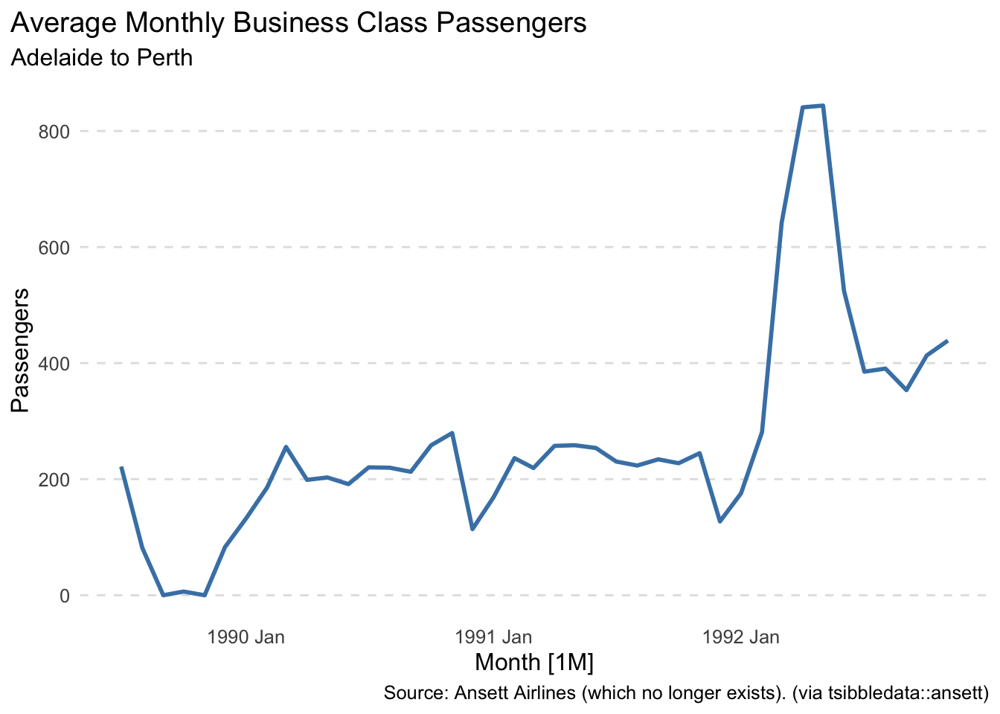
Figure 5: Average monthly business class passengers between Adelaide and Perth via Ansett Airways.
Figure 5 shows no discernible long-term trend in average monthly passenger counts. However, a seasonal pattern is evident, particularly the consistent dip observed in January of each year, likely reflecting lower business travel during the summer holiday period. Additionally, the presence of months with zero passengers corresponds to the 1989 Australian pilots’ industrial dispute, which caused widespread flight disruptions.
The time series contains zero values (months with no recorded passengers), we add 1 to all observations prior to transformation to avoid taking the logarithm or root of zero - this avoids domain issues while preserving the temporal structure required for STL and X-11 decomposition.
To explore whether a variance-stabilizing transformation is appropriate, we use Guerrero’s method. The Box-Cox parameter is estimated as follows:
# Estimate optimal Box-Cox lambda using Guerrero's methodansett_lambda <- adl_perth |>features(Passengers_Adj, features = guerrero) |>pull(lambda_guerrero)ansett_lambda
[1] -0.8999268
Interpretation:
The estimated parameter \(\lambda \approx\) -0.9 suggests a transformation close to an inverse 9th root \(\left(\frac{1}{\sqrt[9]{y}}\right)\) , indicating that the original series exhibits non-constant variance.
However, Figure 5 does not reveal any visible relationship between the level of the series and the seasonal variation, implying that variance stabilization may not be necessary in this case.
That said, for completeness and to satisfy the formal analysis requirements, we proceed with the Box-Cox transformation.
Code
# plotadl_perth |>autoplot(box_cox(Passengers_Adj, ansett_lambda)) +labs(title ="Average Monthly Business Class Passengers: Adelaide to Perth",subtitle =TeX(paste0("Variance stabilisation via Box-Cox: $\\lambda \\approx ", round(ansett_lambda, 3), "$" )),y ="Box-Cox(Passengers)" ) +geom_line(color ="steelblue", linewidth =1)
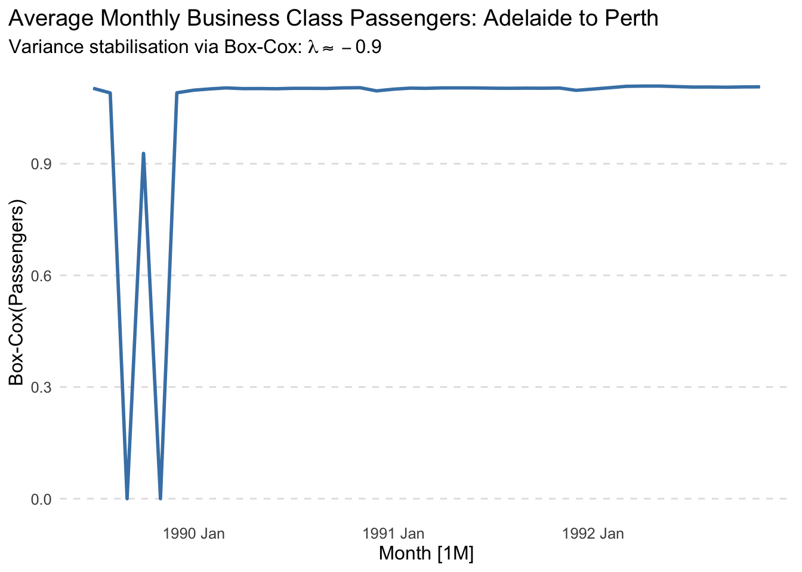
Figure 6: Average monthly business class passengers travelling between Adelaide and Perth transformed via Box-Cox
Decomposition using STL and X-11
We know there were months with zero passengers travelling these are expected to be outliers so we set robust=TRUE in the STL decomposition so that occasional unusual observations will not affect the estimates of the trend-cycle and seasonal components. They will, however, affect the remainder component.
Code
# Perform STL decompositionansett_stl_dcmp <- adl_perth |>model(stl =STL(box_cox(Passengers_Adj, ansett_lambda), robust=TRUE) ) |>components()# Plot Trend, Seasonality, and Remainderansett_stl_dcmp |>autoplot(color ="steelblue", linewidth =1) +labs(title ="STL decomposition of Business Class Passengers: Adelaide to Perth",caption =TeX(paste0("Variance stabilisation via Box-Cox: $\\lambda \\approx ", round(ansett_lambda, 3), "$" )), )
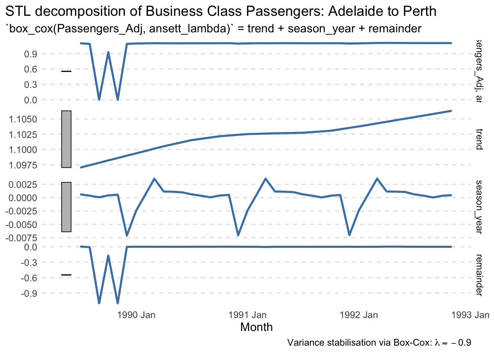
Figure 7: STL decomposition of the Box-Cox Transformed Business Class Passengers Adjusted
The X-11 tends to be highly robust to outliers and level shifts in the time series so no additional configuration is needed.
Code
# Perform X-11 Decompositionansett_x11_dcmp <- adl_perth |>model(x11 =X_13ARIMA_SEATS(box_cox(Passengers_Adj, ansett_lambda)~x11()) ) |>components()# Plot Trend, Seasonality, and Remainderansett_x11_dcmp |>autoplot(color ="steelblue", linewidth =1) +labs(title ="X-11 decomposition of Business Class Passengers: Adelaide to Perth",caption =TeX(paste0("Variance stabilisation via Box-Cox: $\\lambda \\approx ", round(ansett_lambda, 3), "$" )), )
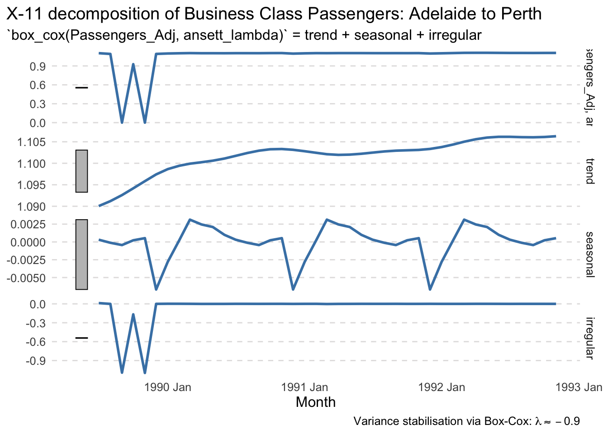
Figure 8: X-11 decomposition of the Box-Cox Transformed Business Class Passengers Adjusted
Comparison: STL and X-11 Decomposition
Trend Component: The trend estimated by Figure 7 (STL) is smoother compared to that in Figure 8 (X-11).
Seasonal Component: Both methods capture the same seasonal pattern.
Remainder Component: Both methods capture similar remainder components.
Annual South African Exports
The global_economy data from the tsibbledata package contains annual economic indicators published by the World Bank, spanning the period 1960 to 2017. For this analysis, we focus on the Exports variable, , which measures exports of goods and services as a percentage of GDP.
Code
za_exports <- global_economy |>filter(Country =="South Africa") |>select(Year, Exports)za_exports |>autoplot(Exports, color ="steelblue", linewidth =1) +labs(title ="South African Exports: 1960–2017",x ="Year",y ="% of GDP",caption ="Source: World Bank (via tsibbledata::global_economy)" )
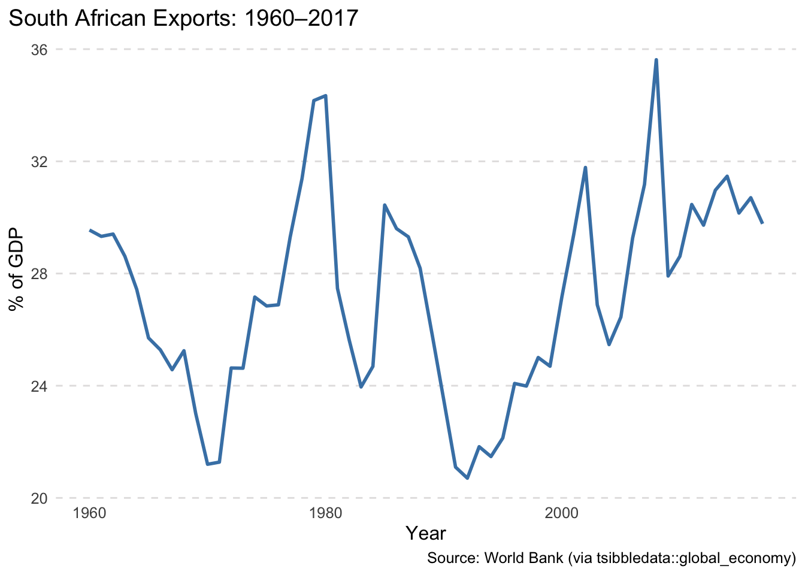
Figure 9: Exports of goods and services from South Africa from 1960 to 2017.
Figure 9 - South African exports, as a share of GDP, do not display a consistent upward or downward trend, nor any discernible seasonal pattern — which is expected given the annual frequency of the data.
STL Decomposition
To analyze long-term patterns, we apply STL decomposition to the export series. Since the data is annual, STL can only extract the trend and remainder components — the seasonal component is not estimated, as STL (and methods like X-11) require higher-frequency data to isolate seasonality.
Code
za_exports_stl_dcmp <- za_exports |>model(stl =STL(Exports,robust =TRUE) ) |>components()za_exports_stl_dcmp |>autoplot(color ="steelblue", linewidth =1) +labs(title ="STL Decomposition of South African Exports", )
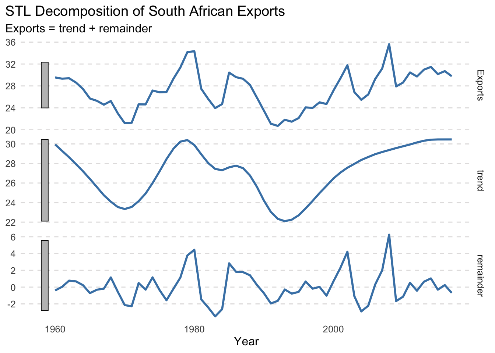
Figure 10: STL decomposition of South African exports as a percentage of GDP, showing trend and remainder components for annual data.
Figure 10 - The trend-cycle reveals medium-term fluctuations, but no repeating seasonal effects — highlighting that trend analysis is more suitable than seasonal decomposition in this context.
Fitting Exponential Smoothing Models
To assess the forecasting performance of exponential smoothing methods, we split the series into a training set (years before 2013) and a test set (2013 to 2017). We fit the following models:
ETS(A,N,N): Simple exponential smoothing with additive errors, no trend or seasonality.
ETS(A,A,N): Exponential smoothing with additive errors and additive trend, no seasonality.
Table 1 - The ANN model assumes no trend, while the AAN model includes a slope (b[0]) and a smoothing parameter for the trend (beta). Figure 11 shows that both exponential smoothing models with trend capture the same pattern on the training dataset.
Figure 11: Fitted values from ETS models (ANN and AAN) faceted vertically by model, overlaid on South African export data for the training period (pre-2013).
Model Evaluation
Code
za_ets_fc <- za_ets_fit |>forecast(h =5 )# Accuracy for both train and test setsza_exports_accuracy <-bind_rows(accuracy(za_ets_fit), # Training accuracy( za_ets_fc, za_exports |>filter(Year >=2013) ) # Test) za_exports_accuracy |>select(model = .model, type = .type, RMSE) |>pivot_wider(names_from = model, values_from = RMSE) |>kbl() |>kable_styling(bootstrap_options =c("striped", "hover"))
Table 2: Root Mean Squared Error (RMSE) of ETS models (ANN and AAN) evaluated on both training data (1960–2012) and test data (2013–2017).
type
ANN
AAN
Training
2.387155
2.393041
Test
1.072079
1.143415
Table 2 compares the RMSE of the two ETS models on both the training and test datasets. While both models exhibit nearly identical performance on the training data, the ANN model achieves a lower RMSE on the test set, suggesting that a simpler exponential smoothing model without a trend component generalizes slightly better to recent export patterns.
Forecast Visualization
Code
za_ets_fit |>forecast(h =5) |>autoplot(za_exports, level =NULL) +labs(title ="Forecasts of South African Exports",y ="% of GDP" ) +guides(colour =guide_legend(title ="Forecast"))
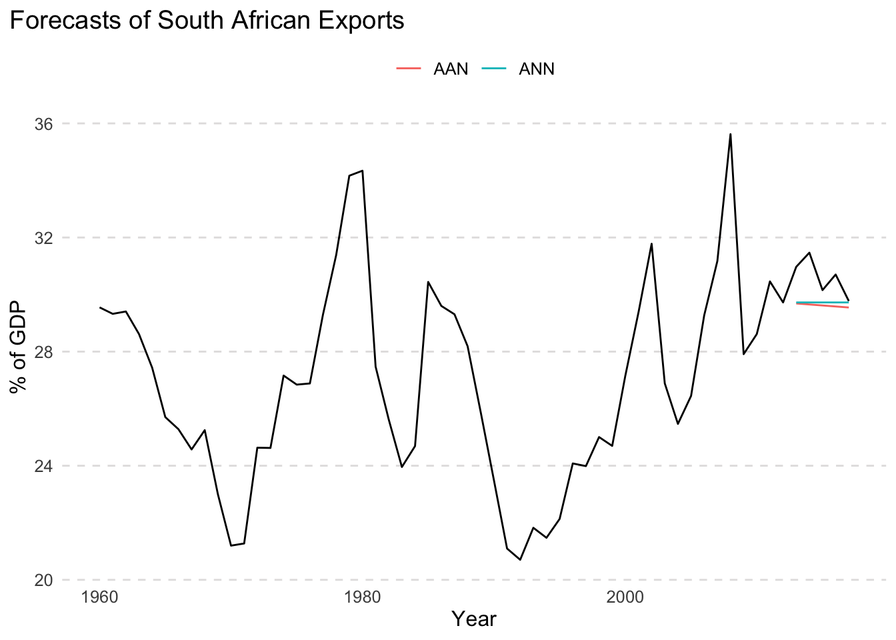
Figure 12: 10-year forecast of South African Exports (% of GDP) using ETS models.
Figure 12 shows that the simple exponential smoothing has a “flat” forecast function and the exponential smoothing with trend as a decreasing slope forecast. function.
95% Prediction Interval (Manual vs R Calculated)
Table 3 compares the manually computed and R-generated 95% prediction intervals for the 2013 export forecast. Both models yield nearly identical point forecasts, and while the intervals are very similar, the R-generated intervals are slightly wider. This difference arises because R’s forecast intervals are derived from the full forecast distribution, incorporating model-specific uncertainty rather than relying solely on RMSE and normality assumptions. This makes them more appropriate for capturing the full predictive uncertainty, especially over longer horizons or with more complex model dynamics.
Table 3: Side-by-side comparison of 95% prediction intervals for the 2013 forecasts.
Model
Forecast
Manual_PI
R_PI
ANN
29.72395
[25.05, 34.40]
[24.95, 34.49]
AAN
29.68856
[25.00, 34.38]
[24.81, 34.57]
Quarterly International Arrivals from the UK
The aus_arrivals dataset contains quarterly international arrival counts to Australia from various countries, spanning from 1981 Q1 to 2012 Q3.
Figure 13 shows that international arrivals to Australia from the United Kingdom followed an upward trend from 1981 until around 2005, after which the series displays a gradual decline. The data also exhibits a clear seasonal pattern, with peaks typically occurring in Q4 (likely due to end-of-year travel and holidays) and troughs in Q2 and Q3. The amplitude of this seasonal cycle increases with the level of the series, indicating multiplicative seasonality.
Code
arrivals_from_uk <- aus_arrivals |>filter(Origin =="UK")arrivals_from_uk |>autoplot(Arrivals, color ="steelblue") +labs(title ="UK Arrivals to Australia",y ="Arrivals (in thousands)",caption ="Source: Tourism Research Australia." ) +scale_y_continuous(labels =label_number(scale =1e-3, suffix ="k"))# arrivals_from_uk |># autoplot(Arrivals, color = "steelblue") +# labs(# title = "UK Arrivals to Australia",# x = "Year",# y = # )
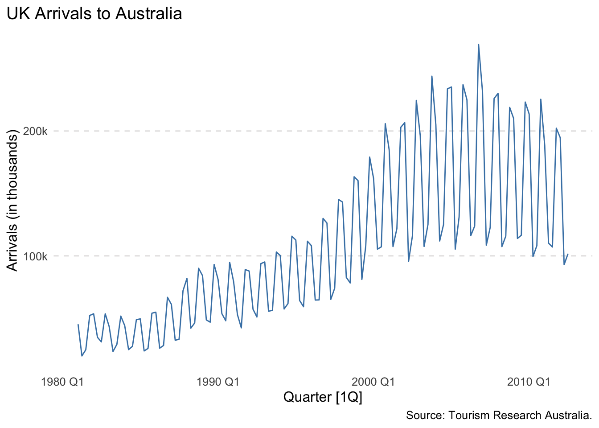
Figure 13: Quarterly international arrivals to Australia from the UK (1981 Q1 – 2012 Q3).
Train-Test Split
We create a training set that withholds the last two years of available data i.e., We fit the model to the training set (1981 Q1–2010 Q3) and forecast the final two years (2010 Q4–2012 Q3).
Code
arrivals_uk_train <- arrivals_from_uk |>filter_index("1981 Q1"~"2010 Q3") # holds out last 2 yearsarrivals_uk_test <- arrivals_from_uk |>filter_index("2010 Q4"~ .)
Holt-Winters’ multiplicative model
The Holt-Winters multiplicative model is suitable when the seasonal variation increases proportionally with the level of the series, as observed in Figure 13 - this behavior—known as multiplicative seasonality — characterized by widening seasonal peaks and troughs over time.
Figure 14 shows forecasts generated by the Holt-Winters’ multiplicative method and the model produces reasonable forcasts that are close to the actual arrival values in the testing set.
Code
# Fithwm_fit <- arrivals_uk_train |>model(HWM =ETS(Arrivals ~error("M") +trend("A") +season("M")) )# Forecasthwm_fc <- hwm_fit |>forecast(h =8)# Plothwm_fc |>autoplot(arrivals_from_uk) +labs(title ="Holt-Winters’ Multiplicative Forecast of UK Arrivals",x ="Year",y ="Number of Arrivals",caption ="Source: Tourism Research Australia" ) +scale_y_continuous(labels =label_number(scale =1e-3, suffix ="k"))
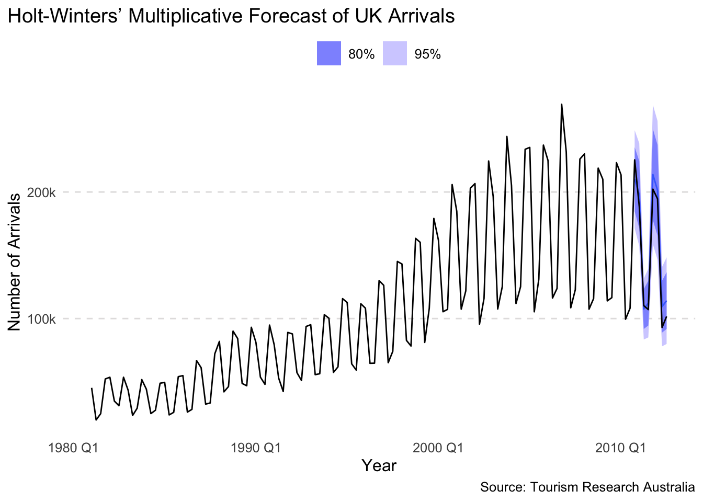
Figure 14: 2-Year forecast of international arrivals to Australia from the UK using Holt-Winters’ multiplicative method.
Forecasting Models Considered
To evaluate the best approach for forecasting UK arrivals, we trained four distinct models on historical data (1981 Q1 – 2010 Q3). Each model incorporates a different strategy for capturing trend and seasonality in the data:
Seasonal Naïve (SNaive): A simple benchmark model that forecasts each quarter to be equal to the same quarter in the previous year. It captures seasonality but assumes no trend.
Holt-Winters Multiplicative (HWM): Captures both a changing trend and seasonal patterns whose magnitude grows with the level of the series. This model is well-suited to the observed data and serves as our baseline exponential smoothing method.
Additive ETS on Log-Transformed Data (ETS_LOG): Applies an exponential smoothing model with additive errors, damped trend, and additive seasonality to log-transformed arrivals. This approach stabilizes variance and can improve forecast reliability for series with exponential growth or volatility.
STL Decomposition with ETS (STL_ETS): Decomposes the log-transformed series using STL (Seasonal-Trend decomposition using Loess), then fits an ETS model to the seasonally adjusted component. This method provides flexibility in modeling complex seasonality and trend separately.
Table 4 presents the forecasting accuracy of the four candidate models using RMSE and MAPE for both the training and test sets.
The STL_ETS model achieved the lowest RMSE and MAPE on the training data, suggesting excellent in-sample fit. However, its poor test performance—particularly a sharp increase in MAPE—indicates overfitting and weak generalization.
The ETS_LOG model offered the most balanced performance, with low RMSE and MAPE on both training and test sets, making it the most reliable overall.
The Holt-Winters multiplicative model (HWM) showed moderate accuracy, outperforming SNaive and STL_ETS on the test set but not matching ETS_LOG.
Finally, the seasonal naïve (SNaive) method performed worst overall in terms of RMSE, though its test set MAPE remained competitive due to the simplicity of the model.
Code
# Forecast on test period (2010 Q4 – 2012 Q3)arrivals_uk_fc <- arrivals_uk_fit |>forecast(h =8)# Evaluate model accuracy on training and test setsarrivals_uk_accuracy <-bind_rows(accuracy(arrivals_uk_fit), # Training setaccuracy(arrivals_uk_fc, arrivals_uk_test) # Test set) arrivals_uk_accuracy |>select(model = .model, type = .type, RMSE, MAPE) |>pivot_wider(names_from = type, values_from =c(RMSE, MAPE)) |>mutate(model =as.character(model)) |>kbl(digits =2,col.names =c("Model", "Training", "Test", "Training", "Test"),booktabs =TRUE ) |>add_header_above(c(" "=1, "RMSE"=2, "MAPE"=2)) |>kable_styling(bootstrap_options =c("striped", "hover"))
Table 4: Forecast accuracy (RMSE and MAPE) of each model on training and test sets
RMSE
MAPE
Model
Training
Test
Training
Test
SNaive
11639.74
14265.93
9.10
7.32
ETS_LOG
8103.41
8786.53
6.96
5.68
STL_ETS
7497.01
18979.61
5.99
12.19
HWM
8227.60
10955.29
6.97
7.26
In summary, ETS_LOG provides the best compromise between fit and forecast accuracy, while STL_ETS, despite strong training metrics, fails to generalize well (See Figure 15)
Code
# Forecast using all modelsarrivals_uk_fc <- arrivals_uk_fit |>forecast(h =8)# Filter to zoom-in period (2008 Q1 onward)arrivals_uk_fc |>filter(Quarter >=yearquarter("2008 Q1")) |>autoplot( arrivals_from_uk |>filter(Quarter >=yearquarter("2008 Q1")),level =NULL ) +labs(title ="Zoomed Forecast Comparison: UK Arrivals to Australia",subtitle ="Focus on test period: 2010 Q4 – 2012 Q3",x ="Year",y ="Number of Arrivals",caption ="Source: Tourism Research Australia" ) +scale_y_continuous(labels = scales::label_number(scale =1e-3, suffix ="k")) +guides(color =guide_legend(title ="Model"))
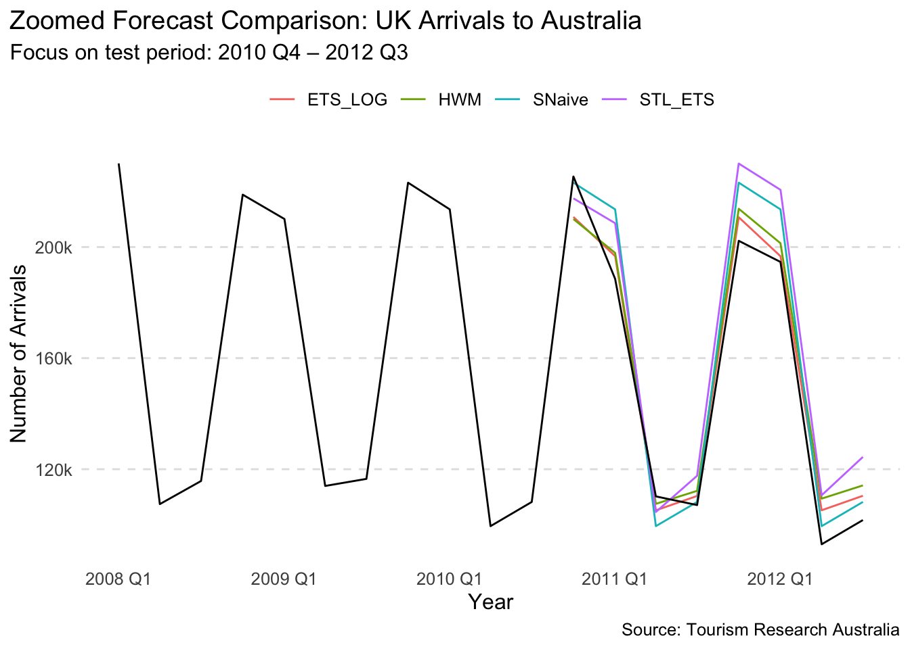
Figure 15: Zoomed-in comparison of forecasts from four models against actual UK arrivals to Australia, focusing on the 2010 Q4 – 2012 Q3 test period.
Based on the accuracy table (Table 4), ETS_LOG had the lowest RMSE and MAPE on both training and test sets, so it is the best-performing model overall. Figure 16 shows that the innovation residuals are uncorrelated and have zero-mean, suggesting the forecasts are good.
Code
# Residual diagnostics for best-performing modelarrivals_uk_fit |>select(ETS_LOG) |>gg_tsresiduals() +labs(title ="Residual Diagnostics",subtitle ="ETS applied to log-transformed arrivals" )
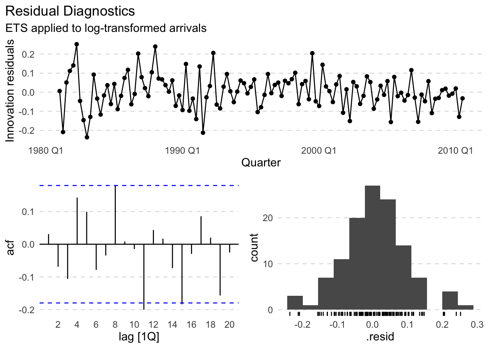
Figure 16: Residual diagnostics for the log-transformed ETS model fitted to UK arrivals training data.
Applying the Ljung-Box test, we obtain the following result.
Table 5: Ljung–Box test (lag 10) on residuals from each forecasting model for UK arrivals.
Model
LB_Statistic
P_Value
ETS_LOG
11.032
0.355
HWM
12.849
0.232
SNaive
51.949
0.000
STL_ETS
9.917
0.448
Table 5 shows the Ljung–Box test results (lag = 10) applied to the residuals of each model. The null hypothesis is that residuals are uncorrelated (i.e., resemble white noise).
For ETS_LOG, the p-value is \(0.355\), indicating no significant autocorrelation in the residuals — a good sign.
HWM also passes the test (\(p = 0.232\)).
SNaive fails the test (\(p < 0.001\)), indicating significant autocorrelation and poor residual behavior.
STL_ETS performs well with \(p = 0.448\), suggesting acceptable residual independence.
We conclude that ETS_LOG is not only the most accurate model but also passes residual diagnostics — validating it as the best-performing model.
Time Series Cross-Validation
We now apply time series cross-validation (TSCV) to compare the forecasting accuracy of the same four models evaluated earlier: SNaive, ETS_LOG, STL_ETS, and HWM. Instead of a single train/test split, TSCV repeatedly trains each model on expanding windows of the time series and evaluates forecast accuracy over multiple rolling horizons.
This approach better reflects real-world forecasting scenarios and offers a more reliable assessment of model performance.
Code
# Perform 8-step ahead time series cross-validationtscv_errors <- arrivals_from_uk |>stretch_tsibble(.init =80, .step =2) |># ~20 years of initial trainingmodel(SNaive =SNAIVE(Arrivals),ETS_LOG =ETS(log(Arrivals) ~error("A") +trend("Ad") +season("A")),STL_ETS =decomposition_model(STL(log(Arrivals)),ETS(season_adjust ~error("A") +trend("A") +season("N")) ),HWM =ETS(Arrivals ~error("M") +trend("A") +season("M")) ) |>forecast(h =8) |>accuracy(arrivals_from_uk) # compares forecast with actuals
Warning: The future dataset is incomplete, incomplete out-of-sample data will be treated as missing.
7 observations are missing between 2012 Q4 and 2014 Q2
Table 6: Forecast accuracy (RMSE and MAPE) of each model using time series cross-validation (8-step ahead rolling forecasts).
Model
RMSE
MAPE
ETS_LOG
13577.05
7.00
HWM
14089.91
7.42
SNaive
15681.63
6.85
STL_ETS
21495.83
11.14
Table 6 reports the RMSE and MAPE for each forecasting model based on 8-step ahead rolling forecasts using time series cross-validation.
ETS_LOG demonstrates consistently strong performance, achieving the lowest RMSE and maintaining the best MAPE among the candidate models. Its use of log transformation and damped trend appears to generalize well across time.
HWM (Holt-Winters’ Multiplicative) remains competitive, delivering robust and stable forecasts with only slightly higher error metrics than ETS_LOG.
SNaive, while simple and interpretable, underperforms relative to the ETS-based models, particularly in terms of RMSE. This reaffirms the patterns observed in the holdout test evaluation.
STL_ETS performs the worst overall. Its poor RMSE and MAPE may be attributed to STL’s fixed seasonal window, which may not adapt well to local structure in rolling forecast origins.
These results reinforce ETS_LOG as the most effective model for forecasting UK arrivals, both in standard train-test evaluation and under time series cross-validation.